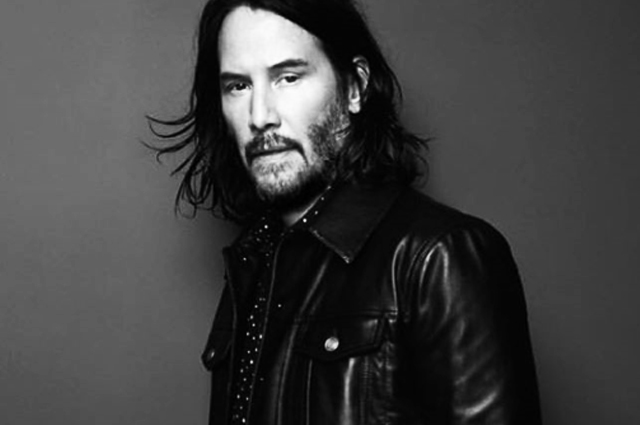

КИАНУ РИВЗ
KEANU REEVES Канадский и американский актёр кино, телевидения и театра.
Полное имя — Киану Чарльз. Родился 2 сентября 1964 года в Бейруте, Ливан. Киану Ривз в отличие от многих актёров в жизни выглядит точно так же, как и на экране — красивый, со слегка раскосыми глазами, юный, чуть-чуть задумчивый, немного эксцентричный, не очень общительный. Мягок и вежлив, невероятно скромен, любит перехваливать партнёров, режиссёра, сценарий. Киану Ривз одновременно — настоящий сорвиголова, в детстве прыгал с крыш, да и сейчас любит риск. В число его хобби входит езда верхом, игра в хоккей, виндсерфинг, бальные танцы. Вообще Ривз обожает мотоцикл и просто помешан на скорости, за что расплачивается бесчисленным множеством шрамов.
ПРИЗЫ И НАГРАДЫ
Премия канала "MTV":
Номинация на премию канала "MTV":